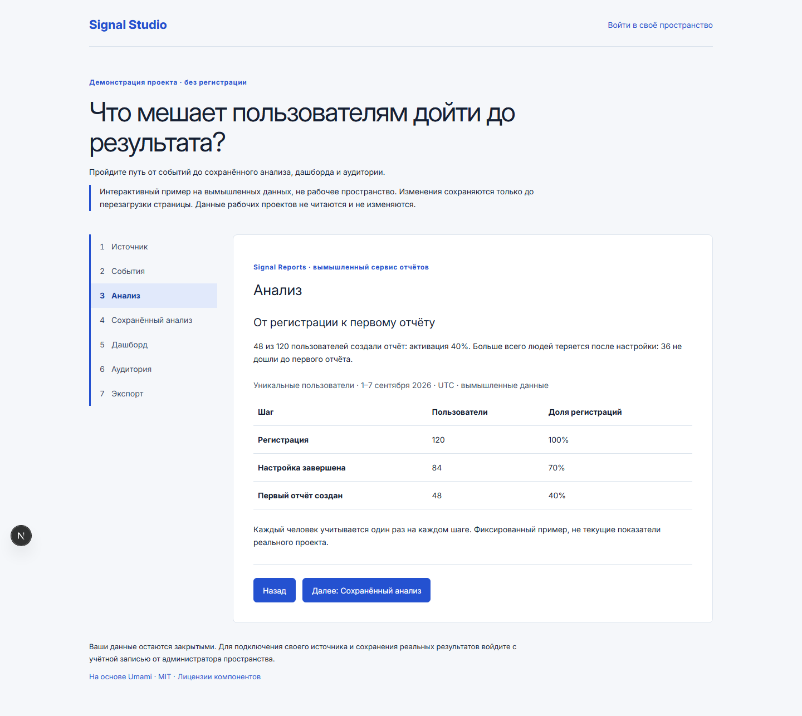
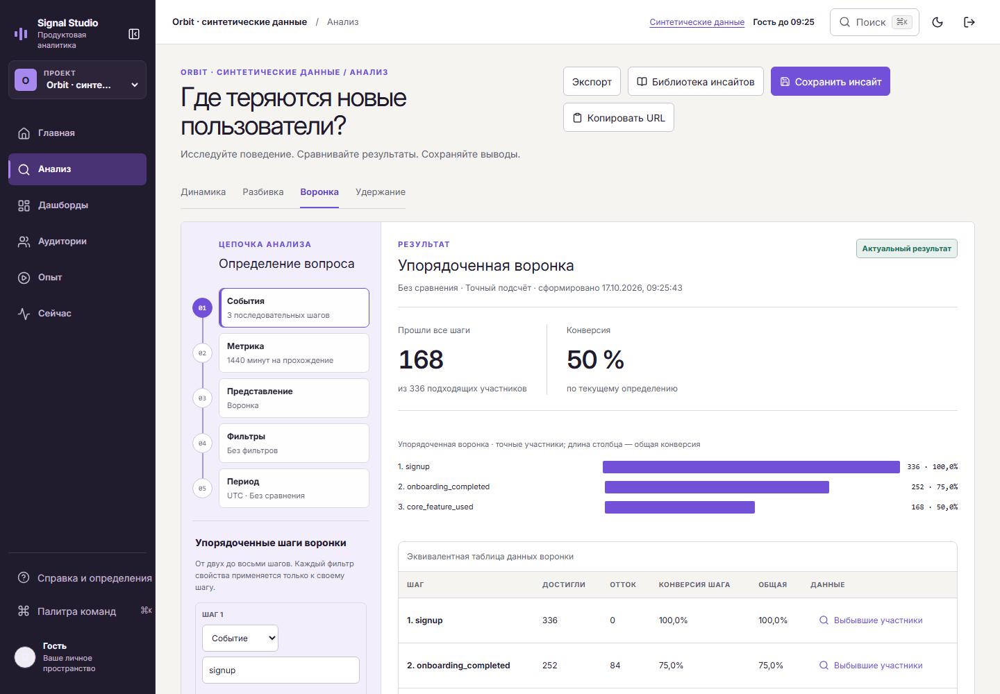
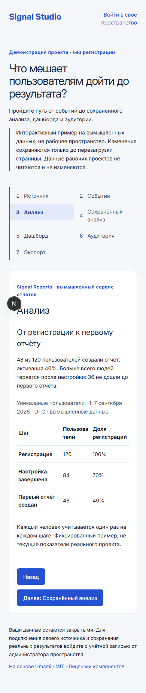
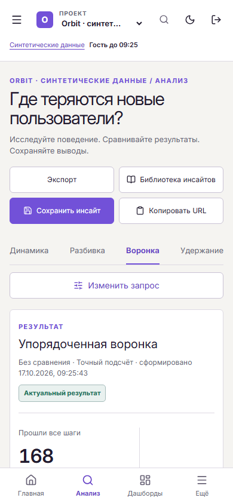
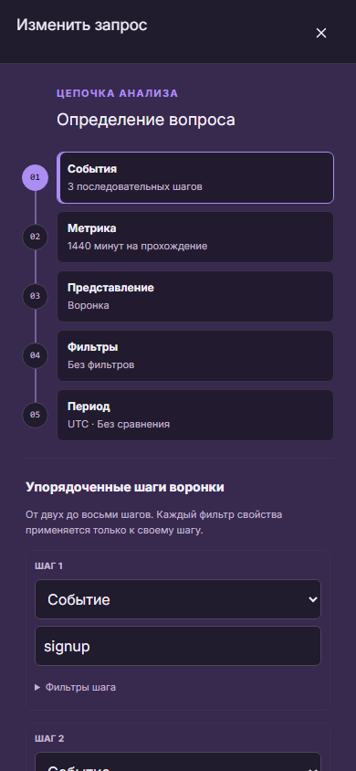
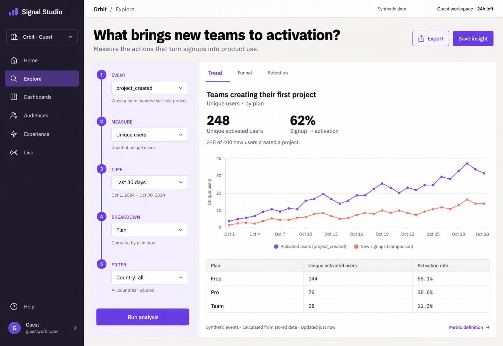

До · исходный анализ
Приложение
Светлая навигация, настройки и описание исходного интерфейса.
Signal Studio · визуальное сравнение
Исходный интерфейс, выбранная концепция и реальное гостевое приложение. Все изображения открываются в полном размере. Кадры до и после используют разные данные и периоды.
Открыть полную галерею ↗Реальные скриншоты. В сравнении показана верхняя область одинакового размера; полный исходный кадр доступен по клику.

Светлая навигация, настройки и описание исходного интерфейса.

Контрастная навигация, цепочка запроса и вычисленный результат.
Кадры 390 × 844. Навигация, таблица и редактирование доступны в узком экране.

Верхняя область исходной мобильной страницы.

Вопрос и результат в самостоятельном мобильном представлении.

Настройки анализа раскрываются в отдельном рабочем режиме.
Макет imagegen задаёт композицию. Значения в нём иллюстративны; приложение рассчитывает показатели по событиям.

Тёмная навигация, лавандовая Query Spine и светлый холст результатов.
Тип графика определяет запрос. Здесь показана воронка активации по синтетическим событиям.
Фактический синтетический набор: 336 пользователей, 84 аккаунта, 42 дня. Воронка: регистрация → завершение настройки → ключевая функция. Расчёт выполнен рабочей аналитической логикой Signal Studio.
Тихие поверхности для таблиц и графиков, контрастная навигация, выразительная связь между вопросом и результатом.